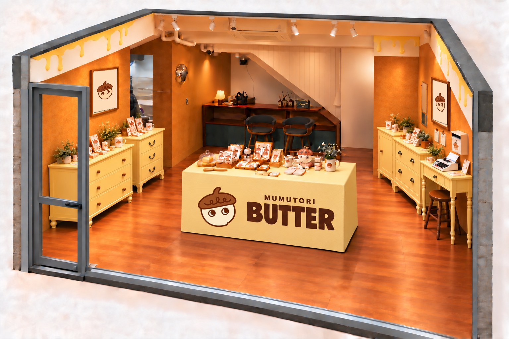
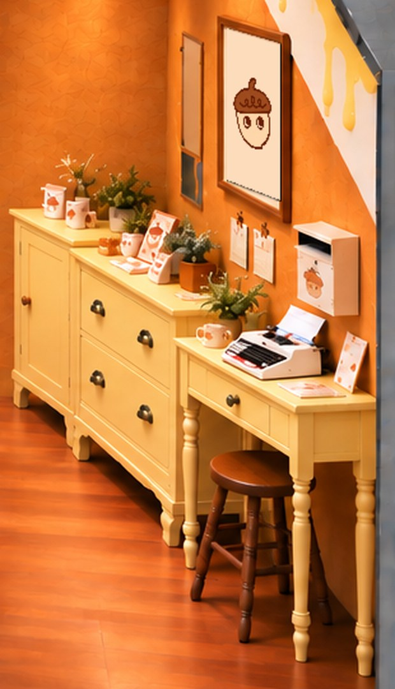
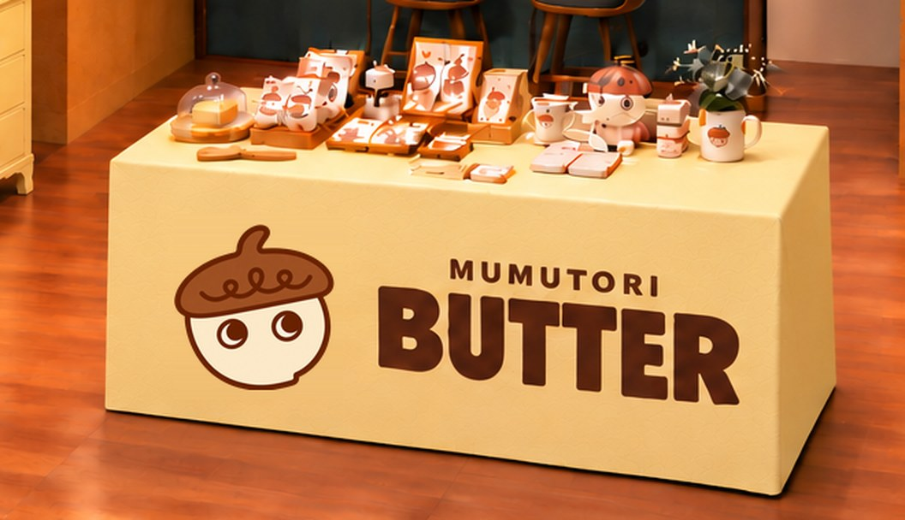

MUMUTORI · STORE OPENING
무무토리 소품상점
편지 곁에 놓일 작은 것들.
11월 1일 일요일에 만나요.
배치안은 여기서 참고하고, 실제 준비와 체크는 오프라인 프로젝트에서 이어가세요.
먼저 볼 곳
매장 준비 목록 하나로
필요한 것별로 결정하고, 주문·도착 상태와 의견을 함께 남기세요.
매장 준비 목록 열기운영 홈과 같은 기준
지금 준비 상태
- 11/1(일) 오픈 준비
- 다희 님 배치안 기준
- 오늘 집기 확인·실측
다음 할 일
팔시보에서 구매할 집기와 기존 비품을 구분해 체크
2026.10.26 기준
지금까지 정한 배치
오픈까지 준비 순서
오픈일 외 일정은 준비 목표입니다. 구매·납기·설치 완료를 뜻하지 않습니다.
10/26 월기존 비품 확인 → 중앙 테이블·가구 자리 실측 → 부족한 집기 구매
10/27 화버터 블록 부착 방식·고정판·필요 수량 검토. 간판은 제작 일정 별도 확인
10/28~30가구 도장·액자 출력·상품 진열·안내 카드·레터 한글 모의 인쇄
10/31 토진열·매장 안내 최종 점검. 결제·취소·마감 연습은 제안 단계
11/1 일오픈 · 영업시간과 안내 내용 최종 확인
중앙 테이블 · 검토 중
현재 안 테이블보 없이 버터 말랑이를 벽돌처럼 엇갈리게 붙이기. 네 면 부착을 우선 검토합니다.
이전 시안 박스형 테이블보·인쇄천은 과거 참고 그림이며 구매·제작 확정이 아닙니다.
버터 블록 1개와 테이블 실측 후 수량·고정판·안전을 확인하고 결정합니다. 주문 완료로 표시하지 않습니다.
보유·완료를 구분해요
단말기: 받음 → 연결·개통·시험은 남음.
프린터: 보유 → 출력 규격·잉크 확인.
중국 화물: 입항 기록 → 현장 도착은 확인 필요.
럭키 세트: 디자인 시안 → 제작·구매 수량 미정.
다희 님 그림 · 이전 시안
이 그림의 자리로 준비해요
배치 그림과 이전 시안이 섞여 있습니다. 테이블보 그림은 현재 확정안이 아니며, 실측·구매 완료와 다릅니다.





